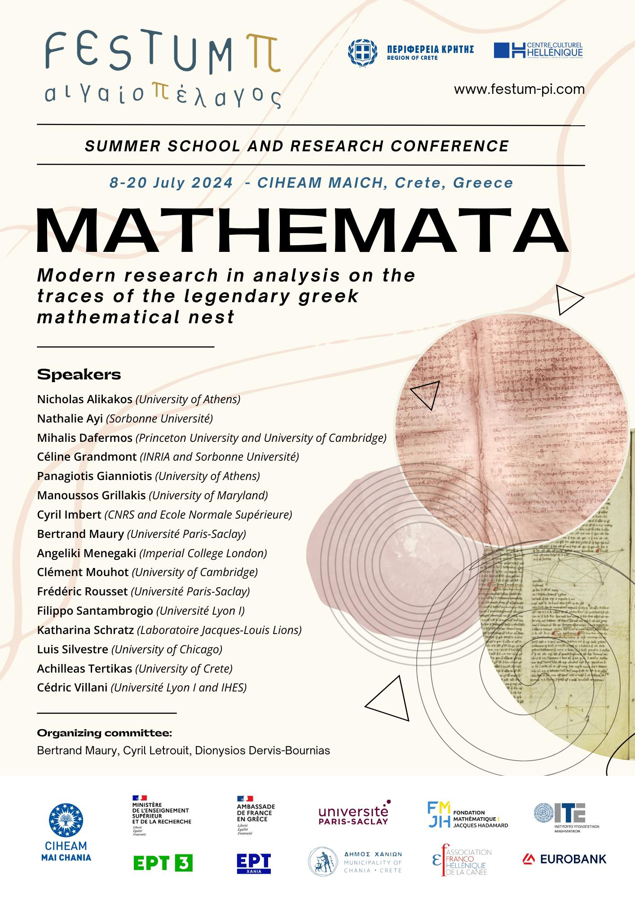

❖ News & Seminars
Saturday 19 to Monday 21/11/2024
From Saturday 19 to Monday 21/11, the UoA Festival will take place, in the centre of Athens (Historical building of the National and Kapodestrian University of Athens).
Everyone interested in studying mathematics in NKUA can find us there (open days to get to know the NKUA’s 42 departments, with the presence of members of the teaching and research staff). I will be representing the mathematics department Sunday 20/11, hours 12:00-16:00.
Every Friday 15:15, Dept. of Mathematics NKUA, in A31 or A32
The webpage of this years seminar can be found below.
By Cédric Villani and Nicholas Alikakos
Cédric Villani on "Νέα Τηλεόραση Κρήτης".
Nicholas Alikakos on "Νέα Τηλεόραση Κρήτης".
Winter Semester 2024-25
After some discussion with the students of "Grad. Progr.: Mathematics" and with doctoral students of NKUA, Dept. of Mathematics, we proudly announce the creation of the first "Mathematics Group", organised by Anastasios Fragkos, Ioannis Oikonomidis, Konstantinos Bizanos and Vagelis Katsantonis.
The website for this semester:

20th of May 2024, Online
Lecture by A. Tzella, on advection, diffusion and geometry.
08th of July 2024, Chania Crete
Summer school and research conference Festum-π.
Between others, C. Villani, C. Mouhot, M. Dafermos, N. Alikakos, P. Gianniotis will speak.

27th-29th of September 2024, Amphitheatre "Καραθεωδορή"
The Departments of Mathematics of Greece organise the 16th panhellenic geometry seminar, which is in part dedicated to Dionisios Lappas and Maria Papatriantafillou.
Between others, I. Androulidakis, P. Gianniotis will speak.4&5 of July 2023, "Κωστής Παλαμάς" Room
The Department of Mathematics of NKUA organises a seminar in honour of Ioannis Stratis, due to his recent retirement. You can find more information in the following link:
Between others, N. Alikakos, V. Bitsouni, D. Frantzeskakis, N. Gialelis will speak.Hosting service: Github